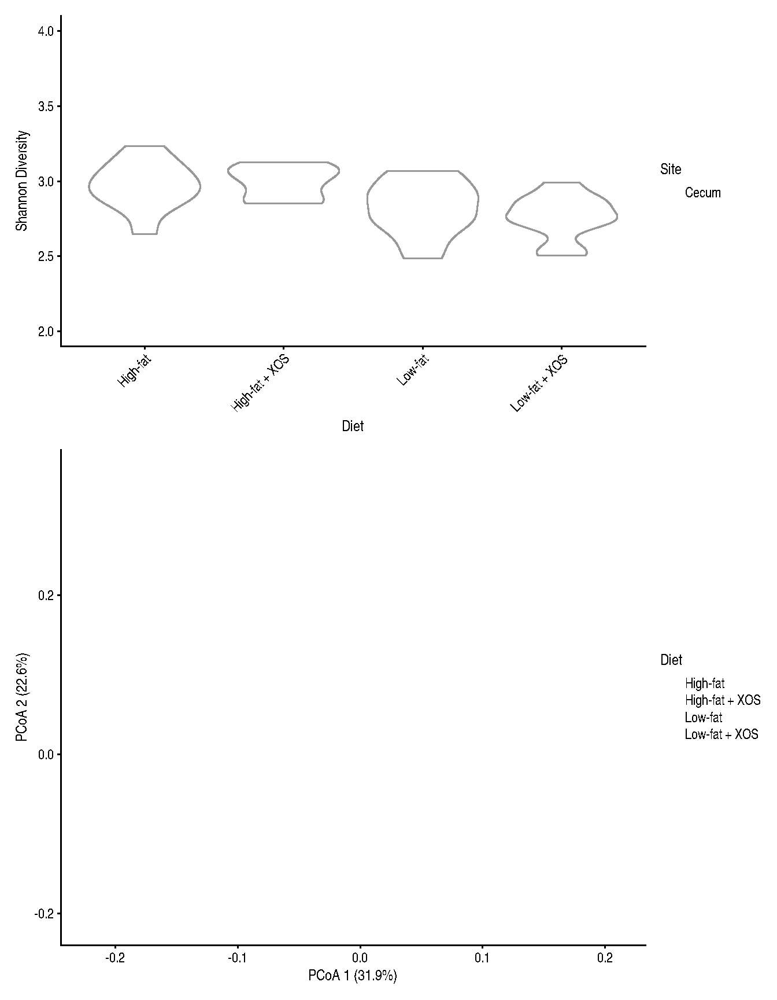
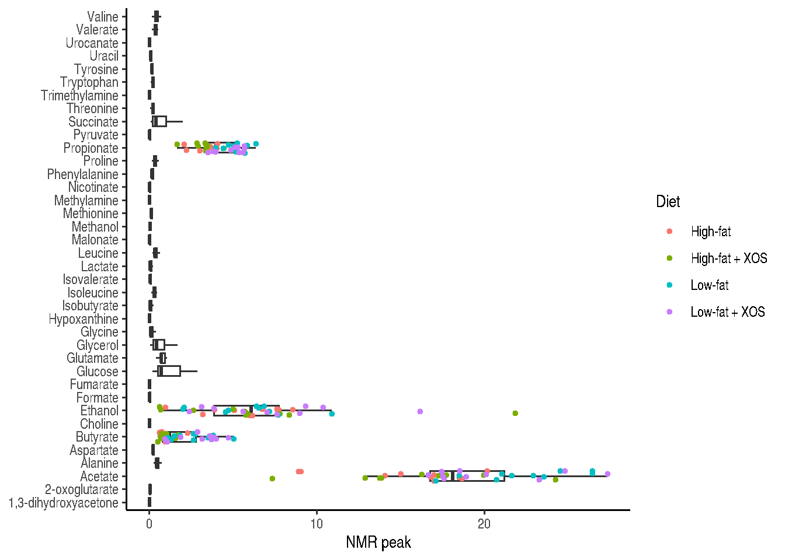

HintikkaXOData is a MultiAssayExperiment containing microbiome, metabolome and biomarker data from a study on the effects of diet and prebiotics on fatty-liver disease in rats (Hintikka et al. 2021).
mae <- HintikkaXODataexperiments(HintikkaXOData)
ExperimentList class object of length 3:
[1] microbiota: TreeSummarizedExperiment with 12706 rows and 40 columns
[2] metabolites: TreeSummarizedExperiment with 38 rows and 40 columns
[3] biomarkers: TreeSummarizedExperiment with 39 rows and 40 columns
. . .
The rat population (N = 40) was divided into 4 groups (n = 10), which underwent different diets over a period of 12 weeks. The 4 groups included:
Microbiome data was obtained by 16S rRNA gene sequencing of bacterial DNA sampled from the cecum of terminated rats. Then, sequence reads were assembled into Operational Taxonomic Units (OTUs).
Warning: The following values are already present in `metadata` and will be
overwritten: 'agglomerated_by_rank'. Consider using the 'name' argument to
specify alternative names.
Warning in grid.Call.graphics(C_polygon, x$x, x$y, index): semi-transparency is
not supported on this device: reported only once per page

Figure 1
Metabolites
Metabolome data was obtained from the same cecal samples by nuclear magnetic resonance (NMR) spectroscopy. There is a total of 38 features, corresponding to the different metabolites.
Warning: Removed 27 rows containing non-finite outside the scale range
(`stat_boxplot()`).

Biomarkers
. . .
Biomarkers data were obtained by Western blot from protein homogenates of rat tissues. There is a total of 39 features, corresponding to the biomarkers/site combinations.
Hintikka, Jukka, Sanna Lensu, Elina Mäkinen, Sira Karvinen, Marjaana Honkanen, Jere Lindén, Tim Garrels, Satu Pekkala, and Leo Lahti. 2021. “Xylo-Oligosaccharides in Prevention of Hepatic Steatosis and Adipose Tissue Inflammation: Associating Taxonomic and Metabolomic Patterns in Fecal Microbiomes with Biclustering.”International Journal of Environmental Research and Public Health 18 (8): 4049. https://doi.org/10.3390/ijerph18084049.